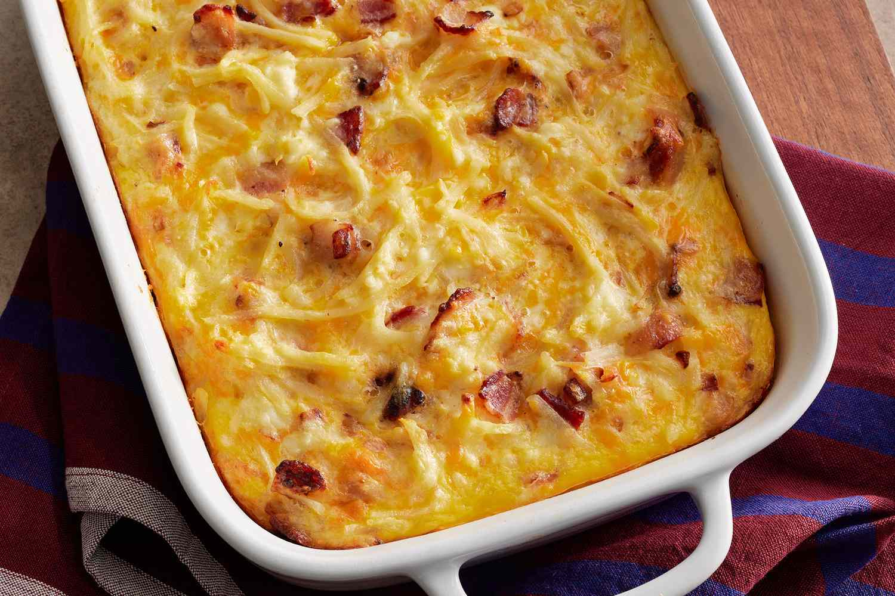

Amish Breakfast Casserole

Description
A cheesy delicious breakfast that would fill your stomach to the fullest.
Ingredients
- Bacon and onion: This Amish breakfast casserole starts with an onion sauteed with bacon.
- Eggs: You’ll need nine (lightly beaten) eggs.
- Hash browns: Frozen hash brown potatoes are the convenient secret ingredients.
- Cheese: This recipe calls for Cheddar, Swiss, and small curd cottage cheeses.
Steps
- Cook the bacon and onion, drain, and transfer to a bowl.
- Stir in the eggs, potatoes, and cheeses.
- Pour into a prepared baking dish and bake until the eggs are set.